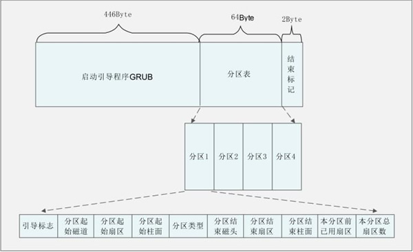
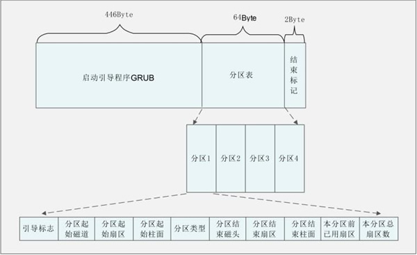

主引导目录（MBR）结构及作用详解
MBR 也就是主引导记录，位于硬盘的 0 磁道、0 柱面、1 扇区中，主要记录了启动引导程序和磁盘的分区表。我们通过图 1 来看看 MBR 的结构。

图 1 MBR的结构
MBR 共占用了一个扇区，也就是 512 Byte。其中 446 Byte 安装了启动引导程序，其后 64 Byte 描述分区表，最后的 2 Byte 是结束标记。我们已经知道，每块硬盘只能划分 4 个主分区，原因就是在 MBR 中描述分区表的空间只有 64 Byte。其中每个分区必须占用 16 Byte，那么 64 Byte 就只能划分 4 个主分区。每个分区的 16 字节的规划如表 2 所示。
大家注意到了吧，MBR 中最主要的功能就是存储启动引导程序。
每种操作系统的文件格式不同，因此，每种操作系统的启动引导程序也不一样。不同的操作系统只有使用自己的启动引导程序才能加载自己的内核。如果我的服务器上只安装了一个操作系统，那么这个操作系统的启动引导程序就会安装在 MBR 中。BIOS 调用 MBR 时读取出启动引导程序,就可以加载内核了。
但是在有些时候，我的服务器中安装了多个操作系统，而 MBR 只有一 个，那么在 MBR 中到底安装哪个操作系统的启动引导程序呢？
很明显，一个 MBR 是不够用的。每块硬盘只能有一个 MBR 是不能更改的，所以不可能増加 MBR 的数量。系统只能在每个文件系统（可以看成分区）中单独划分出一个扇区，称作引导扇区（Boot Sector)。每个分区的引导扇区中也能安装启动引导程序，也就是说，在 MBR 和每个单独分区的引导扇区中都可以安装启动引导程序。这样多个操作系统才能安装在同一台服务器中（每个操作系统要安装在不同的分区中），而且每个操作系统都是可以启动的。
还有一个问题，BIOS 只能找到 MBR 中的启动引导程序，而找不到在分区的引导扇区中的启动引导程序。那么，要想完成多系统启动，我们的方法是増加启动引导程序的功能，让安装到 MBR 中的启动引导程序（GRUB）可以调用在分区的引导扇区中的其他启动引导程序。
因此，启动引导程序拥有以下功能：
当然，这个安装顺序不是绝对的，就算最后安装了 Windows，我们也可以通过手工再安装 GRUB 的方法，来保证 MBR 中安装的还是 Linux 的启动引导程序。
下图为我们展示了启动引导程序的作用。

图 2 启动引导程序的作用

图 1 MBR的结构
MBR 共占用了一个扇区，也就是 512 Byte。其中 446 Byte 安装了启动引导程序，其后 64 Byte 描述分区表，最后的 2 Byte 是结束标记。我们已经知道，每块硬盘只能划分 4 个主分区，原因就是在 MBR 中描述分区表的空间只有 64 Byte。其中每个分区必须占用 16 Byte，那么 64 Byte 就只能划分 4 个主分区。每个分区的 16 字节的规划如表 2 所示。
| 存储字节 | 数据内容及含义 |
|---|---|
| 第 1 字节 | 引导标志 |
| 第 2 字节 | 本分区的起始磁道号 |
| 第 3 字节 | 本分区的起始扇区号 |
| 第 4 字节 | 本分区的起始柱面号 |
| 第 5 字节 | 分区类型，可以识别主分区和扩展分区 |
| 第 6 字节 | 本分区的结束磁道号 |
| 第 7 字节 | 本分区的结束扇区号 |
| 第 8 字节 | 本分区的结束柱面号 |
| 第 9~12 字节 | 本分区之前已经占用的扇区数 |
| 第 13~16 字节 | 本分区的总扇区数 |
大家注意到了吧，MBR 中最主要的功能就是存储启动引导程序。
启动引导程序的作用
BIOS 的作用就是自检，然后从 MBR 中读取出启动引导程序。那么，启动引导程序最主要的作用就是加载操作系统的内核。当然，每种操作系统的启动引导程序都是不同的。每种操作系统的文件格式不同，因此，每种操作系统的启动引导程序也不一样。不同的操作系统只有使用自己的启动引导程序才能加载自己的内核。如果我的服务器上只安装了一个操作系统，那么这个操作系统的启动引导程序就会安装在 MBR 中。BIOS 调用 MBR 时读取出启动引导程序,就可以加载内核了。
但是在有些时候，我的服务器中安装了多个操作系统，而 MBR 只有一 个，那么在 MBR 中到底安装哪个操作系统的启动引导程序呢？
很明显，一个 MBR 是不够用的。每块硬盘只能有一个 MBR 是不能更改的，所以不可能増加 MBR 的数量。系统只能在每个文件系统（可以看成分区）中单独划分出一个扇区，称作引导扇区（Boot Sector)。每个分区的引导扇区中也能安装启动引导程序，也就是说，在 MBR 和每个单独分区的引导扇区中都可以安装启动引导程序。这样多个操作系统才能安装在同一台服务器中（每个操作系统要安装在不同的分区中），而且每个操作系统都是可以启动的。
还有一个问题，BIOS 只能找到 MBR 中的启动引导程序，而找不到在分区的引导扇区中的启动引导程序。那么，要想完成多系统启动，我们的方法是増加启动引导程序的功能，让安装到 MBR 中的启动引导程序（GRUB）可以调用在分区的引导扇区中的其他启动引导程序。
因此，启动引导程序拥有以下功能：
- 加载操作系统的内核。这是启动引导程序最主要的功能。
- 拥有一个可以让用户选择的菜单，来选择到底启动哪个系统。大家如果在服务器上安装过双 Windows 系统，就应该见过类似的选择菜单，不过这个选择菜单是由 Windows 的启动引导程序提供的，而不是 GRUB。
- 可以调用其他的启动引导程序，这是多系统启动的关键。不过需要注意的是，Windows 的启动引导程序不能调用 Linux 的启动引导程序，所以我们一般建议先安装 Windows，后安装 Linux，是为了将 Linux 的启动引导程序安装到 MBR 中，覆盖 Windows 的启动引导程序。
当然，这个安装顺序不是绝对的，就算最后安装了 Windows，我们也可以通过手工再安装 GRUB 的方法，来保证 MBR 中安装的还是 Linux 的启动引导程序。
下图为我们展示了启动引导程序的作用。
图 2 启动引导程序的作用
关注公众号「站长严长生」，在手机上阅读所有教程，随时随地都能学习。内含一款搜索神器，免费下载全网书籍和视频。

微信扫码关注公众号